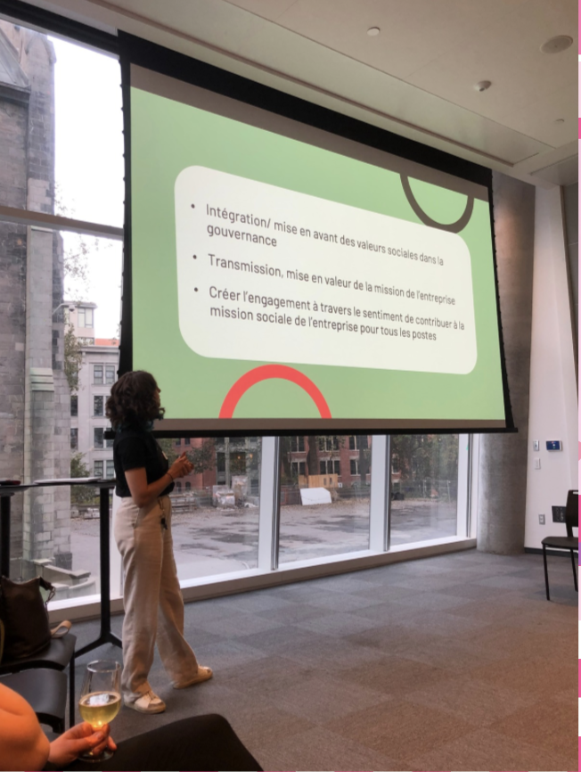

Auxilliaire de recherche
Université Éphémère
Gouvernance démocratique et participative en économie sociale et circulaire
Un temps de réflexion collective lors duquel une variété de personnes décide de problématiser un sujet qui les concernent pour différentes raisons, en partageant et diffusant des expériences, des connaissances, des pratiques et des savoirs.

À propos
L’Université éphémère est un espace de réflexion et d’échange collectif autour de la place de la démocratie dans la transition vers une économie circulaire juste et inclusive. Partant du constat que la transformation de nos modes de production, de consommation et d’échange ne peut reposer uniquement sur les expert·es et les institutions, elle questionne les formes de participation et de gouvernance qui permettent d’impliquer une diversité d’acteurs et d’actrices dans cette transition. Elle s’intéresse plus particulièrement aux organisations d’économie sociale, dont les principes de fonctionnement démocratique offrent des perspectives intéressantes pour repenser la gouvernance de l’économie circulaire. À travers le partage d’expériences et la mise en discussion de pratiques concrètes, l’Université éphémère cherche à comprendre les apports, les limites et les défis de ces formes de gouvernance participative, notamment en comparaison avec celles des entreprises à but lucratif.
Méthodes
L’Université éphémère s’est construite autour d’une démarche de recherche-action participative, réunissant des personnes issues des milieux de la recherche et de l’économie sociale pour réfléchir collectivement aux enjeux de gouvernance démocratique dans l’économie circulaire.
Elle s’est déroulée en trois demi-journées, chacune mobilisant une posture différente. La première, celle d’acteur·ice, visait à partager les expériences de terrain et à identifier les besoins, les freins et les leviers rencontrés. La deuxième, celle de chercheur·euse, invitait les participant·es à explorer collectivement des réponses aux enjeux soulevés. Enfin, la troisième, celle de journaliste, était consacrée à la synthèse des échanges et à la formulation de pistes d’action concrètes.
La démarche s’est appuyée sur plusieurs outils d’animation participative, notamment les chapeaux de Bono et le Café des possibilités. Un 5 à 7 scientifique a également permis d’enrichir les réflexions par un dialogue entre connaissances scientifiques et expériences de terrain.
Contribution
J’ai participé aux différentes activités de l’Université éphémère, en prenant part aux échanges et aux réflexions collectives sur la gouvernance démocratique dans les organisations d’économie sociale et circulaire. Dans le cadre du 5 à 7 recherche, j’ai présenté les résultats de mes travaux de maîtrise sur les conditions de travail dans les organisations d’économie sociale engagées dans l’économie circulaire, afin de nourrir les discussions et de mettre en dialogue les connaissances scientifiques et les expériences de terrain. J’ai également contribué à la valorisation des apprentissages issus de cette démarche en co-rédigeant le livrable de synthèse de l’Université éphémère.
Productions et publications liées
- Ballon, J., El-Amraoui A., Alagy, C. (2024). Synthèse de l’université éphémère sur la gouvernance démocratique et participative en économie sociale et circulaire, HEC Montréal.
- Alagy, C., Bernard, S., Raufflet, E. (2024). Pratiques organisationnelles et satisfaction en emploi en économie sociale et circulaire. Université éphémère sur la gouvernance démocratique et participative en économie sociale et circulaire, HEC Montréal, Canada